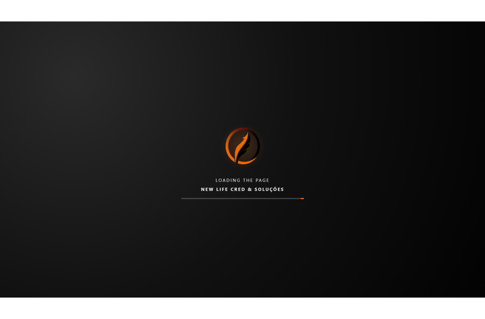
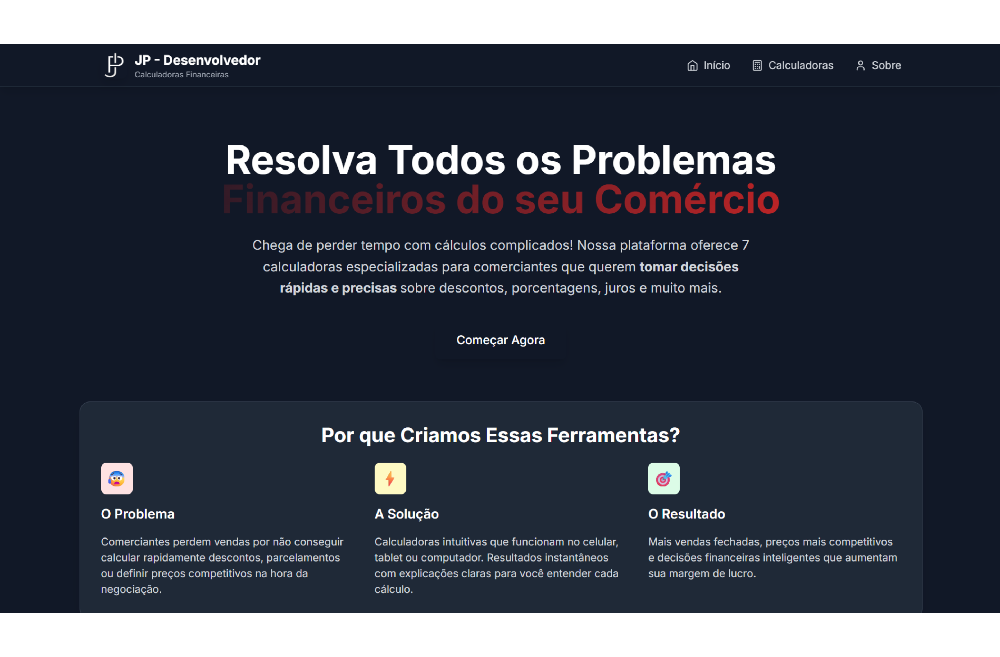

Institucional
New Life Cred & Solucoes
Apresentacao de servicos financeiros com foco em confianca e conversao.
Projetos
Organizei os projetos em uma grade com 3 cards por linha no desktop. Use a busca para encontrar um nome especifico ou filtre pelas categorias abaixo.

Institucional
Apresentacao de servicos financeiros com foco em confianca e conversao.


Institucional
Pagina pessoal com apresentacao de servicos, projetos e canais de contato.
Tente outro nome na busca ou selecione uma categoria diferente.